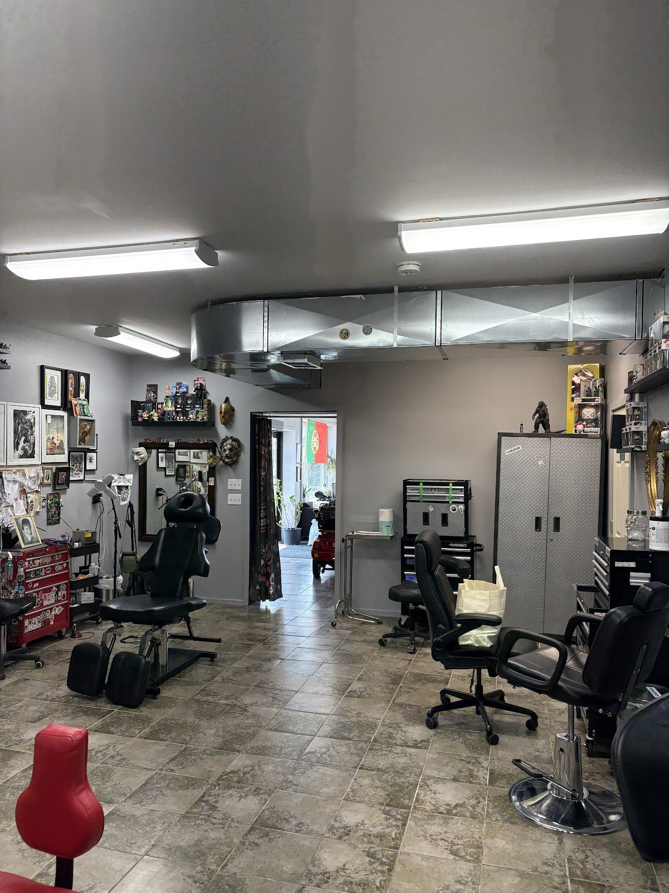

Custom tattoos
Original pieces from consult to final session, including a full sleeve finished in two months.
Source: Chamber of Commerce; Jordan Woodward, Google
What we do
Services from the Quinte West Chamber of Commerce’s April 2025 profile of the studio and from customer reviews. No price list is published; call or email for a consult.
Original pieces from consult to final session, including a full sleeve finished in two months.
Source: Chamber of Commerce; Jordan Woodward, Google
Bad back pieces and “butchered” sleeves from other artists, reworked into something clients love.
Source: Hayley and Jess Banfich, Google
Memorial tattoos created “with so much compassion, care, and respect.”
Source: Jess Banfich, Google
Professional piercing, with the process explained step by step. Walk-ins have been helped.
Source: Jordan Preisinger, Google; exa.ai copy, Aug 2024
Works with Victim Services and survivors of human trafficking to remove unwanted tattoos.
Source: Quinte West Chamber of Commerce, Apr 2025
“The shop was incredibly clean… This is a social place and they accept you as you.”
Source: Google reviews

The story
“This town gave me a second chance at life, and now I want to give back by creating a space where art meets healing.”
Owner Isabelle Payan, quoted by the Quinte West Chamber of Commerce (Apr 11, 2025)
Isabelle moved to Quinte West from Nova Scotia in 2011. Her partner Paul is also an artist. Every November the studio closes to clients and walk-ins for a week to host INKED for Three Oaks, a fundraiser for the Three Oaks Foundation. Call to check this year’s dates.
Portfolio
Work from the studio’s Google listing, including photos clients posted with their reviews. Tap to enlarge.
Reviews
4.9 ★ from 178 Google reviews (checked Oct 31, 2026). Quotes are word for word; “…” marks a trim. Named reviews were read on Google directly. “Via exa.ai copy” means a public copy of the Google listing that doesn’t show reviewer names. The studio replies to reviews personally.
★★★★★
“I’ve had both tattoos and piercings done at East Coast Tattoo Studio, and every experience has been amazing. The staff are welcoming, professional, and make you feel comfortable from the moment you walk in. I’m currently having a terrible back piece from another artist covered by Izzy, and I honestly couldn’t be happier with how it’s turning out. Even just the outline is absolutely beautiful, and it’s already a huge improvement. I can’t wait to see the finished piece. Putting my trust in Izzy was one of the best decisions I could have made. Their talent, attention to detail, and care for their clients really show in their work. I highly recommend East Coast Tattoo Studio to anyone looking for quality tattoos or piercings!”
★★★★★
“I couldn’t be happier with my experience at East Coast tattoo, from the first consultation to the final session Izzy and her team were more then professional, friendly, and made me feel comfortable every step of the way. Their pricing was more than fair, especially considering the incredible quality of the work. I had a full sleeve completed in just two months, and the attention to detail throughout the entire process was amazing. The artist listened to my ideas, brought them to life better than I imagined, and made sure every session was worth it. If you’re looking for talented artists, fair pricing, and a shop that genuinely cares about its clients, I highly recommend this place. I’ll definitely be coming back for future work!”
★★★★★
“I had an amazing experience at East Coast Tattoo! From the moment I walked in, everyone was welcoming, friendly, and professional. The shop was incredibly clean, and they made me feel comfortable throughout the entire process. Izzy was very welcoming and took the time to ask how we've all been. Dan took the time to listen to exactly what was wanted, paid attention to every detail, and created a tattoo that exceeded any expectations. The quality of the work is outstanding, and couldn't be happier with the final result. If you're looking for talented artists, a clean studio, and a great atmosphere, I highly recommend East Coast Tattoo. I'll definitely be back for my next piece!”
★★★★★
“We've had a fantastic experience here. My daughter has had multiple piercings done and every visit has been professional, clean, and welcoming. The staff always take the time to explain the process, answer questions, and make sure she feels comfortable throughout the appointment. The studio is spotless, the atmosphere is friendly, and it's clear they take both safety and customer service seriously. The piercings have healed great and we've always left feeling confident we were in good hands. I wouldn't hesitate to recommend them to anyone looking for quality piercings or tattoo work. Thanks for consistently providing such a great experience!”
★★★★★
“There truly aren’t enough words to express how grateful I am for Izzy, Paul, and everyone at East Coast Tattoos. Izzy has done some of the most meaningful work I’ll ever wear. She created a beautiful memorial tattoo for my son… She’s also been working on fixing a sleeve that another artist completely butchered. I honestly didn’t think it could be saved, but somehow Izzy has transformed it into something I absolutely love. … While we were there, Mike pierced both of my ears, and he was absolutely incredible. … The atmosphere is warm, the shop is spotless, and you can tell they genuinely care about every person who walks through the door.”
★★★★★
“Izzy and Paul (owners) are not only talented but they are wonderful people. Their shop is full of fantastic professionals and good vibes. When I sit in a chair, it's an experience. This is a social place and they accept you as you. They are honest, up front and can deliver great work. I should mention, their staff are also just wonderful human beings too. I have never had more fun getting inked. A true gem of a shop and I am very lucky to have been accepted into their circle. Highly recommend!”
★★★★★
“I was so thankful to have walked right in and been helped. I came in from out of town and had lost the ball on a fresh piercing and couldn’t get it back on. He took me right away and got it back on. Then said he felt bad to even charge me. Thanks for your help!!! 👍👍”
★★★★★
“Izzy created the moons exactly as I showed her. We have an amazing tattoo in memory of our son UN GROS MERCI😁😁”
Hours from the Google listing (checked Oct 31, 2026), matching the Chamber of Commerce article. Closed for a week each November for INKED for Three Oaks (2026 dates not confirmed).
238 Dundas St E
Trenton (Quinte West), ON K8V 1M1
ecttrenton@gmail.com (published in the Chamber of Commerce article)
Wheelchair-accessible entrance and parking (per Google).
Phone from the Google listing and the Chamber of Commerce. Follow the studio on Facebook: East Coast Tattoo & Piercing Studio.